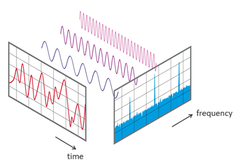
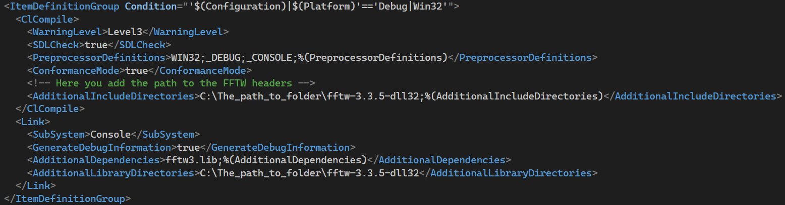
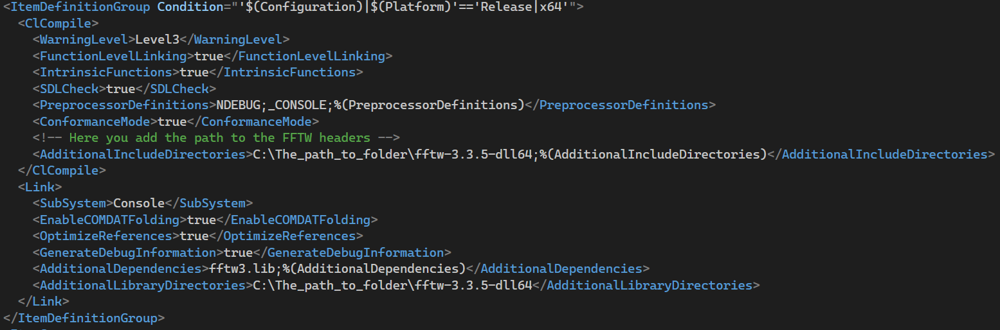
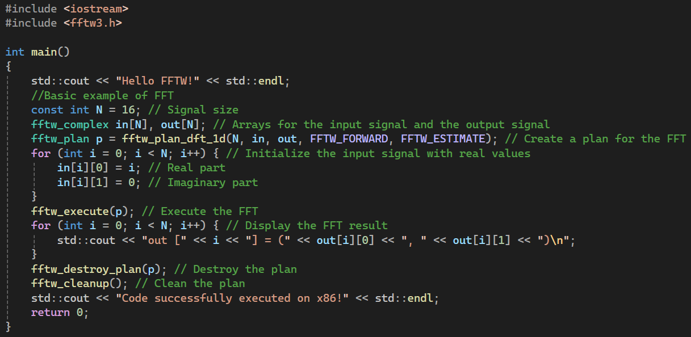
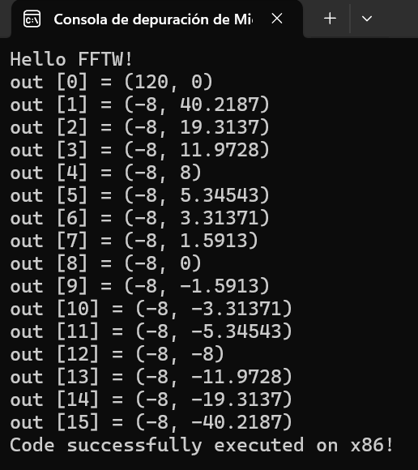

Introduction
Fourier Transform has been an essential tool in signal analysis for decades. Since
its early formulations, this mathematical tool has enabled the decomposition of
complex signals into their basic sinusoidal components, facilitating their analysis,
manipulation, and understanding.
Figure 1. Relationship between the time domain (in red) and the frequency domain (in blue)
of a signal, based on its Fourier Transform. The original signal in the time domain is
decomposed into its frequency components, represented as peaks in the frequency domain.
Source: Wikimedia Commons, created by Lucas Vieira. Available under public domain.
However, the advancement of digital technology made it clear that there was a need to work
with systems that are discontinuous in time, leading to the development of the Discrete
Fourier Transform (DFT), a tool that allows for the same signal analysis but in discrete or
discontinuous time domains, which is crucial for digital systems.
Despite its great
utility, the DFT presents limitations in computational efficiency, especially when dealing
with large volumes of data. Once again, it became evident that more efficient methods were
needed to perform these decompositions.
This is where the Fast Fourier Transform (FFT)
comes into play, revolutionizing signal analysis by significantly reducing the computation
time required, making its practical implementation possible in countless applications.
Figure 2. Image created to illustrate the concept of price movements over time and their
decomposition into frequency components using the Fourier Transform, allowing the
identification of cyclic patterns and future trends.
The impact of the Fourier Transform goes beyond pure mathematics, as it has become a crucial
technique in various disciplines, from telecommunications engineering and physics to
biomedicine and data analysis, such as time series in the financial sector, for example.
This ability to decompose signals, regardless of their complexity, into a sum of sine waves is
what has enabled advances in technologies such as image processing, audio compression,
seismic data interpretation, and market trend forecasting, where these techniques are used
to identify cyclical patterns in price behavior.
The Discrete Fourier Transform
(DFT) was the first step towards computing these analyses in the digital realm, but its
high computational cost soon revealed the need for improvement. This is where the FFT comes
in, an optimization that drastically reduces the number of operations required, allowing
large datasets to be analyzed in feasible times.
However, as applications and
datasets grew larger, the demand for faster, more accurate, and more versatile
implementations led to the development of specialized libraries such as FFTW (the Fastest
Fourier Transform in the West).
Developed by Matteo Frigo and Steven G. Johnson at
MIT, FFTW has proven to be a highly efficient implementation of FFT. Its name, 'The Fastest
Fourier Transform in the West,' reflects its competitive spirit and focuses on performance.
FFTW has managed to position itself as one of the best options for FFT computation across
various platforms, thanks to its ability to adapt to different hardware architectures and
optimize the use of computational resources.
Over the years, FFTW has been widely
used in scientific computing applications, such as numerical simulations and signal
processing. Its modular design and ability to work with different dimensions and types of
data make it a versatile tool for any developer needing to perform fast Fourier transform
calculations efficiently.
Historical Overview of FFTW
The FFTW project (Fastest Fourier Transform in the West) began in 1997, at a time when the
demand for faster and more efficient algorithms for performing the Fourier Transform was
booming.
In that decade, scientific computing and signal analysis were rapidly
advancing, but efficiency in Fourier calculations remained a crucial challenge in various
technological fields.
Research and improvement of algorithms for the Fast Fourier
Transform (FFT) had already spanned several decades, but there was growing interest in
optimizing both the speed and versatility of these calculations, especially for large-scale
applications.
FFTW was primarily developed by Matteo Frigo and Steven G. Johnson, two
mathematicians and computer scientists dedicated to improving algorithm performance. Frigo,
then a PhD student at MIT, and Johnson, a professor at the same institution, devised a
library that could automatically adapt to the specific architecture of any computer on which
it was executed.
This innovative approach made FFTW not only incredibly fast but also
extremely efficient across a wide variety of platforms, from simple processors to
supercomputers.
The first public version of FFTW was released in 1998 and quickly
became a reference in scientific computing, standing out for its speed.
The library
was designed to overcome the limitations of other Fast Fourier Transform implementations by
being able to automatically adapt to the architecture of the processor in use.
Over
the years, FFTW has evolved, improving its efficiency in several aspects: it added support
for multithreaded calculations, incorporated specialized variants for SIMD (Single
Instruction, Multiple Data) architectures, and optimized its algorithms for one, two, and
three-dimensional calculations.
FFTW remains one of the most widely used Fourier
libraries globally, as its latest version, FFTW 3, released in 2003, continues to be updated
and is compatible with modern processing architectures.
Fundamental Concepts
The Fourier Transform is a mathematical tool that converts a signal from the time domain to
its representation in the frequency domain. Essentially, it breaks down a complex signal
into a set of sinusoidal waves of different frequencies.

Its main application is signal analysis, allowing the identification of the dominant
frequency and essential characteristics of any continuous signal.
This is fundamental
in fields like telecommunications, where it is used for visual and audio signal processing,
in wave physics for vibration analysis, and in control systems for filtering noise in
electrical signals, among others.
The Discrete Fourier Transform (DFT) is a variant
of the Fourier Transform, adapted to work with discrete signals. As technology has advanced
towards digital systems, continuous signals have been replaced by digital signals, that is,
values taken at specific time intervals.
The DFT converts a discrete signal into a
series of frequency components, allowing the analysis of frequencies in digital systems.
Some examples of its use include analyzing the frequency of digital signals in applications
like image and audio compression, frequency detection in financial time series, and more.
Although the DFT is a powerful tool, its computational cost is high, especially for large
signals. This is where the Fast Fourier Transform (FFT) comes in, an algorithmic improvement
that significantly reduces the computation time, going from O(N²) complexity in the DFT to
O(N logN) in the FFT.
This has made signal analysis more efficient by allowing
electronic devices and computing systems to process signals much faster, making it a
cornerstone of modern technology.
In summary, while the FT is the general tool
applied to continuous signals and is useful in mathematical theory, the DFT is its discrete
counterpart used for signals in digital systems, and the FFT is an optimized algorithm to
compute the DFT efficiently, drastically reducing processing time.
Despite the
advantages of FFT, there was room to improve its performance on modern hardware. This is
where FFTW (Fastest Fourier Transform in the West) comes in.
FFTW is a highly
optimized software library for computing FFT on various hardware architectures, taking
advantage of cache memory and the specific characteristics of each system.
FFTW
achieves outstanding performance by dynamically generating optimized code at runtime,
allowing FFT calculations faster than traditional implementations.
Its appearance has
facilitated the analysis of high-frequency signals in scientific research and advanced
engineering applications, marking a milestone in FFT computation across various systems.
But what is FFTW?
FFTW, which stands for 'Fastest Fourier Transform in the West', is a widely used library for
computing the Fast Fourier Transform (FFT). Initially developed at MIT, its purpose is to
optimize FFT performance across different platforms, being adaptable to both complex and real
data, in one or multiple dimensions.
FFTW uses a unique approach known as 'planning',
where it optimizes operations for the specific hardware on which it is run, allowing the
computation to be as efficient as possible.
The efficiency of FFTW comes from its
ability to generate plans that optimize the FFT calculation. The software automatically
selects from various execution strategies, allowing it to adapt to the specificities of the
target hardware.
It uses a combination of techniques, such as recursive factorization
and redundancy elimination in the calculation, which drastically reduce the number of
operations needed compared to traditional implementations.
FFTW also takes processor
cache into account, optimizing memory usage and reducing access times, making it one of the
fastest FFT implementations.
While other FFT libraries, such as NVIDIA’s cuFFT for
GPU or Intel's FFT, are also highly efficient on specific platforms, FFTW stands out for its
ability to adapt to a wide variety of architectures and devices, optimizing performance
without manual intervention.
Unlike manual FFT implementations, which can be useful
for very specific applications but are prone to errors and rarely optimize automatically,
FFTW simplifies the process by automatically generating the most efficient strategies. Among
the key advantages of using FFTW, we can mention:
-
Portability: FFTW is compatible with a variety of platforms and operating
systems, ensuring that code using FFTW is portable and efficient across multiple
environments.
-
Automatic optimization: The developer doesn't need to manually optimize FFT
operations, as FFTW automatically generates the best plan for the hardware.
-
Versatility: FFTW supports one-dimensional and multidimensional Fourier
transformations, as well as working with complex and real signals.
-
Large community and support: FFTW is an open-source library with widespread
use in the scientific and technical community, ensuring access to documentation and
continuous support.
FFTW Implementation in C++
The implementation of FFTW in C++ follows a structured process that, although it involves
several steps, ensures an efficient and functional integration of this powerful library into
any project. Below are the essential steps to set up FFTW in a C++ environment using the
Visual Studio IDE.
-
Before starting the implementation, it's necessary to ensure that the
development environment is ready. Visual Studio must be properly installed, along
with the necessary compilers for working with C++. It is important to have a
compatible version of Visual Studio with C++ support, preferably version 2022 or
higher. Additionally, you should verify that the project is configured to work with
the appropriate architectures, such as x86 (32-bit) and x64 (64-bit).
-
The next step is to download the appropriate version of the FFTW library.
Depending on your project's architecture (32 or 64 bits), you should download the
precompiled version of the library from the official FFTW website. Versions are
available for both Windows and Linux, as well as source files if you prefer to
compile the library yourself.
-
Once the library is downloaded, if necessary, you can compile the .dll and
.lib files from the .def definition files. This is done using the
Visual Studio compiler. The compilation will generate dynamic library files
(.dll) and static libraries (.lib), which will be used in the project.
A useful command for this task in 32-bit architecture is:
lib/def:libfftw3-3.def/out:fftw3.lib/machine:x86. Whereas for a 64-bit
architecture it is:
lib/def:libfftw3-3.def/out:fftw3.lib/machine:x64.
-
To use FFTW in your project, you must include the header files (.h) and
libraries (.lib). This is done by adding the corresponding paths to the files in
the .vcxproj project file in Visual Studio, as shown in images 4 through 7.
-
It is necessary to ensure that the project is configured with the correct
architecture. In theory, Visual Studio allows switching between 32-bit and 64-bit
configurations by selecting the dropdown menu located in the top bar. It is important
that the architecture of the FFTW library matches the architecture of the project,
meaning if the 32-bit version of FFTW is downloaded, the project must be configured
to compile in x86 (Win32).

Figure 4. Debug Win32 mode configuration.
Figure 5. Release Win32 mode configuration.
Figure 6. Debug x64 mode configuration.

Figure 7. Release x64 mode configuration.
The image shown below is a simple example of code implementing FFTW to compute the Fast
Fourier Transform on a one-dimensional discrete signal. Code explanation:
-
FFTW Library: First, we include the header file fftw3.h, which contains
the definitions of the functions needed to use FFTW.
-
Signal declaration: A signal of size 16 (N = 16) is declared in the vector
in[]. The vector out[] is also declared to store the FFT result.
-
Planning: fftw_plan_dft_1d() generates an FFT plan to transform the
one-dimensional signal. The fftw_plan_dft_1d() function receives the signal size,
the input vector, the output vector, the transform direction (in this case, forward
FFTW_FORWARD), and an estimation option FFTW_ESTIMATE.
-
FFT execution: fftw_execute() is used to perform the Fast Fourier
Transform on the signal.
-
Displaying results: The FFT result is stored in the out[] vector, and
each value is printed.
-
Cleanup: Finally, the plan is destroyed with fftw_destroy_plan() and
fftw_cleanup() is called to free the memory used by FFTW.

Figure 8. Example of C++ code that implements FFTW to perform a Fast Fourier Transform
(FFT) on an input signal.
Results Analysis
The FFT works by decomposing the original signal into a sum of sinusoidal waves of different
frequencies.
The process essentially converts a signal from the time domain to the
frequency domain, allowing the identification of the frequency components that make up the
original signal.
In our specific case, the FFT decomposed the input signal (a sequence
of real numbers from 0 to 15, where the values correspond to discrete points of a real
function in time) into a series of frequencies.

Figure 9. Console output of the FFTW execution, showing the complex output values
obtained after applying the Fast Fourier Transform to a 16-sample input signal in an
x86 environment.
Due to the simplicity of the signal (numbers from 0 to 15), the FFT identified that most of
the energy is concentrated in the low frequencies, which is reflected in the values obtained
in the spectrum.
The result of the FFT is a series of complex values representing the
frequencies present in the original signal. These frequencies are displayed in terms of their
amplitude and phase, allowing us to visualize which frequencies dominate in the input signal.
The complex value out[0] indicates the amplitude of the zero-frequency component, or the
'constant frequency' (DC). In our case, the amplitude of the constant frequency is high due
to the linear nature of the input signal.
The successive values, such as out[1] and
out[2], indicate the amplitude and phase of the higher-frequency components. The real
values correspond to the magnitude of the sinusoidal component, while the imaginary values
indicate the phase of that frequency.
The observed pattern in the results shows that
for a linear signal, the dominant frequency is the constant one (zero frequency), which
explains the high value in out[0].
As we move through the spectrum, the values
tend to decrease, indicating that higher frequencies have less impact on the original signal.
In more complex applications, such as audio analysis or image processing, the FFT can reveal
more interesting frequency components, such as the presence of specific tones in an audio
signal or repetitive patterns in an image.
Conclusions
The success in implementing FFTW not only highlights its efficiency in handling the FFT but
also its potential in future scientific and development projects.
From signal analysis
in fields such as physics and engineering, to its use in image processing, data compression,
system simulation, and trend prediction in finance, FFTW will continue to be an essential tool.
Its ability to work with different data sizes and hardware configurations makes it a versatile
option that will undoubtedly be integrated into innovative projects across various areas of
knowledge and industry.
It is safe to say that FFTW will continue to evolve, providing
fast and efficient solutions in the ever-changing landscape of technology.
Implementing
the FFTW library in C++ allowed firsthand experience of the flexibility and power this tool
offers. From the initial setup to the successful execution of the program, challenges were
overcome thanks to the clear documentation of the library and the developer community that
has contributed to its evolution.
The implementation itself gave us the opportunity to
appreciate how a tool like FFTW facilitates working with large volumes of data by performing
calculations efficiently and accurately.
Moreover, it deepened our understanding of
the importance of using optimized libraries designed to fully leverage hardware resources,
especially in scientific and engineering applications.
Bibliography and Resources
The official FFTW website is the best
starting point for obtaining direct and up-to-date information about this powerful library.
From downloading versions to accessing detailed technical documentation, this site offers all
the resources needed for those looking to implement FFTW in their projects.
For those
who wish to dive deeper into the library, the
official FFTW manual provides detailed examples and technical explanations on how to
fully utilize the library’s capabilities. From installation to advanced implementation, this
manual is an indispensable tool.
FFTW has been the subject of study in various
scientific research papers. Among the most relevant are publications that explain its
architecture and the algorithms it uses to achieve the efficiency it is known for. It is
recommended to explore studies by Matteo Frigo and Steven G. Johnson, the creators of FFTW,
who have published numerous articles in scientific journals detailing the inner
workings of the library.
The official FFTW page provides
code examples for implementing FFTW in different languages, with C and C++ being the most
common. These examples allow developers to quickly start using the library in their projects.
On platforms such as
Stack Overflow and GitHub, there are active
communities discussing FFTW, providing solutions to common problems and sharing code examples to implement
FFTW in specific projects.
There are online
tutorials that explain in a didactic way how to install and configure FFTW, as well as how to optimize
its use in projects. It is recommended to search for courses and videos on platforms such as
YouTube, Coursera, or Udemy to gain a visual and practical understanding of its use.